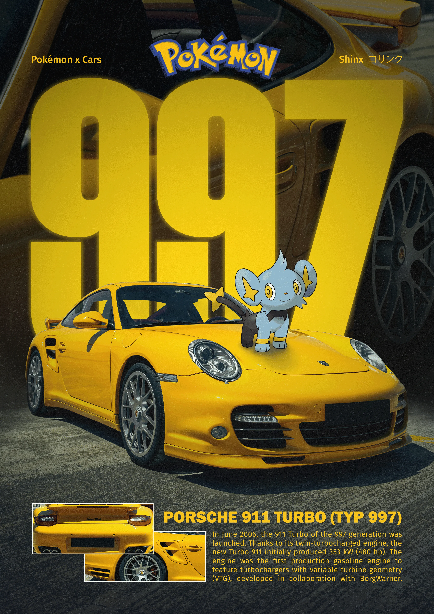
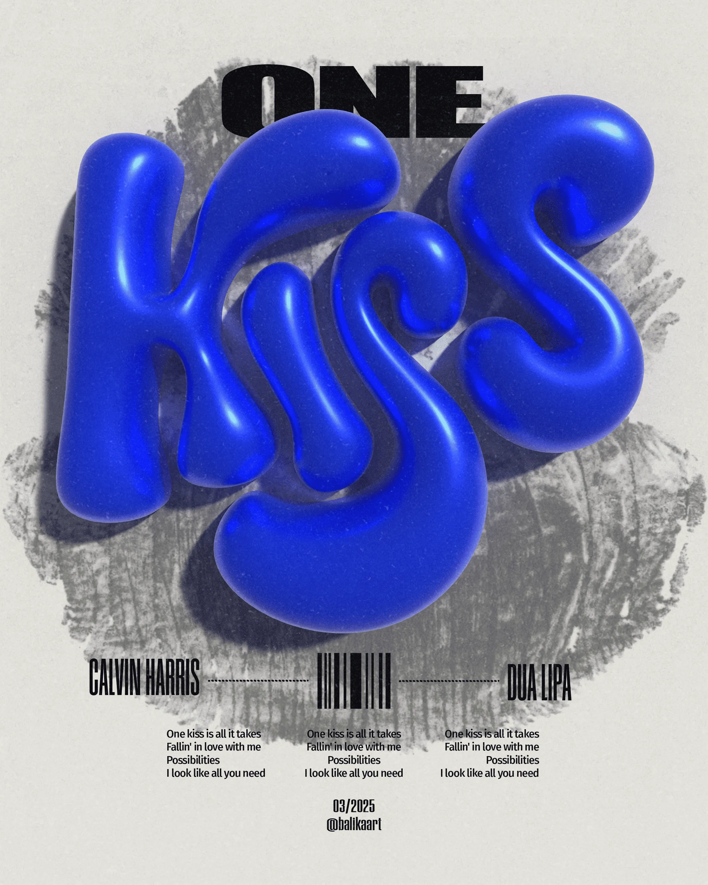
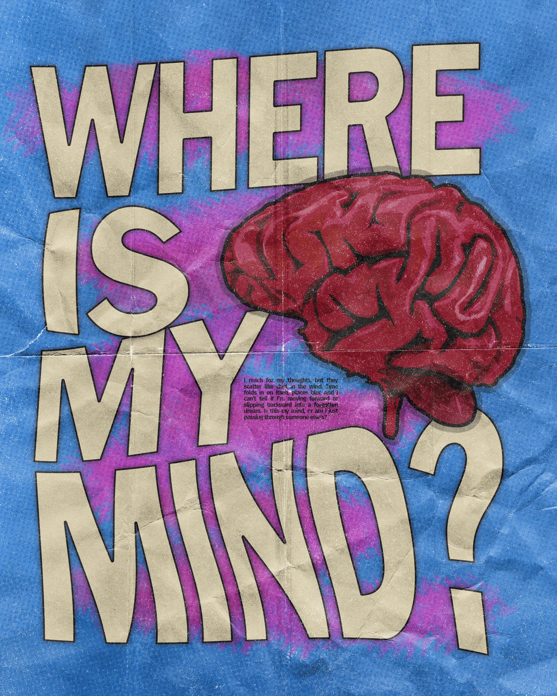

Hi, ich bin Finja Bormann. Ich gestalte digitale Produkte an der Schnittstelle von Design, Code und Kunst.


Projekte
Galerie




Über mich
Bio
Hi, ich bin Finja. Ich war schon immer gerne kreativ und hatte gleichzeitig Interesse an Technik, genau deshalb habe ich mich für mein Studium der Medieninformatik entschieden. In meiner Freizeit sowie als Freelancerin erstelle ich digitale Produkte an der Schnittstelle von Design, Kunst und Code. Dabei arbeite ich gerne an unterschiedlichen Projekten, probiere Neues aus und freue mich immer darauf, mich in neue Themen einzuarbeiten.
Erfahrung
Freelance Digital Design
Konzeption und Gestaltung digitaler Produkte (u.a. Websites, Social Media) für Kunden
Bachelor of Science in Medieninformatik, HSB Hochschule Bremen
Schwerpunkt: UI/UX-Design, Mensch-Computer-Interaktion, Softwareentwicklung und Videoproduktion
Praxissemester Social Media Marketing, CEWE
Dokumentation, Aufbereitung und Auswertung von Kennzahlen
Content-Produktion, insbesondere Shootings und Videoaufnahmen
Redaktionelle Planung und Erstellung von Social-Media-Inhalten
Auslandssemester, BU Bangkok University
Studiengang: Creative Communication Design
Studentische Mitarbeiterin, IDT Institut für Digitale Teilhabe
Mitwirkung an der Literaturrecherche für Forschungsprojekte
Unterstützung bei der Videoproduktion und -schnitt für eine Online-Modulserie
Services
- Videoschnitt
- Social Media Konzeption
- Content Creation
- Branding
- Website Design und Entwicklung
- App Design
- Print Design
- UI/UX Design